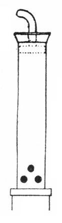
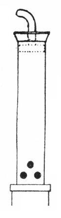

|
Ranket German Rankett German? Ranquette French? |
Racket English? Rackett German Ranquet German |
A reed stop of the Regal class, found at 16 or 8' pitch, and named for the instrument of the same name, an early double-reed with a very muffled tone. While the stop's resonators have been made with a variety of shapes, they are always short, and usually capped with holes in the side or bottom, resulting in a gentle, muffled tone. Wedgwood calls it a variety of Chalumeau, and considers Sordun to be a synonym. Williams dates it from the end of the 16th century �in the area north of a line Antwerp-Breslau�, and states that it had lost popularity by the end of the 17th century. The illustration on the right is Audsley's, the one on the left is Wedgwood's.
Osiris contains over 50 examples of Ranket[t], all at 16' pitch except for three at 8' and one at 4' (an extension). Osiris also contains eleven examples of Ranquette, all at 16' pitch, and all from the 20th century. This name is not mentioned in the literature, but we assume it to be a synonym. No examples of Racket[t] or Ranquet are known.
Ranquette 16', Echo; Cathedrale Notre-Dame, Reims, France; Gonzales 1938.
Ranket 8', Brustwerk; Liebfrauenkirche, Halle, Germany; Cuncius 1716.
Would you like to hear what a Rankett sounds like?
For as little as $10 (US), you can sponsor a page in this Encyclopedia, and help purchase more sound samples!
|
Original website compiled by Edward L. Stauff. For educational use only. Rankett.html - Last updated 5 April 2003. |
Home Full Index |